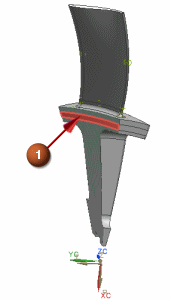
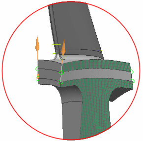

Define a third 2D dependent mesh
Define a third dependent mesh on the faces between the other meshes.
2D Dependent (Mesh group)
-

 Select the face shown on the same side as the master face.
Select the face shown on the same side as the master face.

-
Select the corresponding face on the other side of the polygon body.
-
Select the edges of the face between the dependent faces.

-
Verify that the arrows on the master and target edges point in the same direction as shown in the previous graphic.
If the arrows do not point in the same direction, reverse the direction of one of them using Flip Direction
 .
.
-
Specify CSYS
 Inferred
Inferred
-
Select the cylindrical coordinate system that you used for the first dependent mesh.
-
OK
The 2D Mesh dialog box opens. Do not close it.